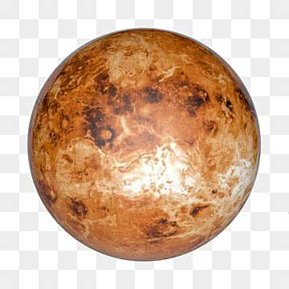
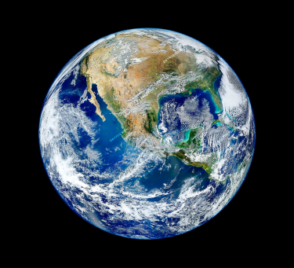
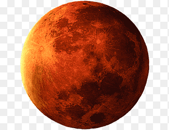
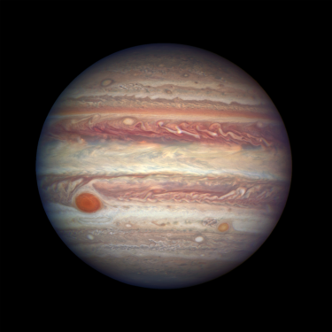

A detailed comparative study of the physical and orbital characteristics of major celestial bodies.
| Metric | Venus | Earth | Mars | Jupiter |
|---|---|---|---|---|
| Images |  |
 |
 |
 |
| Mass (1024 kg) | 4.87 | 5.97 | 0.642 | 1898 |
| Diameter (km) | 12,104 | 12,756 | 6,792 | 142,984 |
| Density (kg/m3) | 5243 | 5514 | 3933 | 1326 |
| Gravity (m/s2) | 8.9 | 9.8 | 3.7 | 23.1 |
| Escape Velocity (km/s) | 10.4 | 11.2 | 5.0 | 59.5 |
| Distance from Sun (106 km) | 108.2 | 149.6 | 228.0 | 778.5 |
| Mean Temperature (C) | 464 | 15 | -65 | -110 |